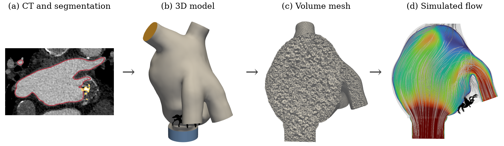
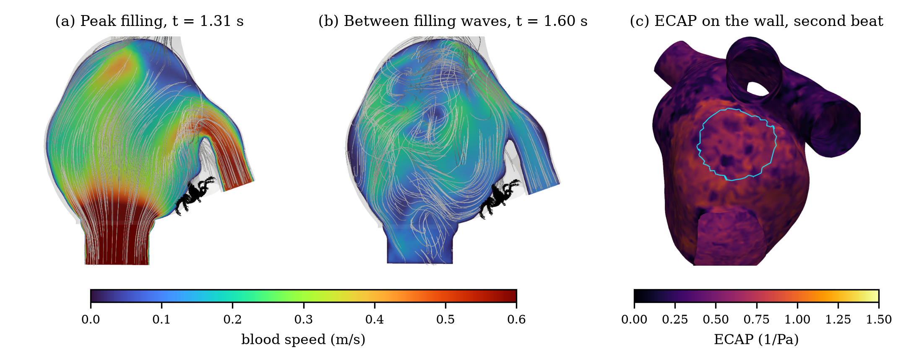
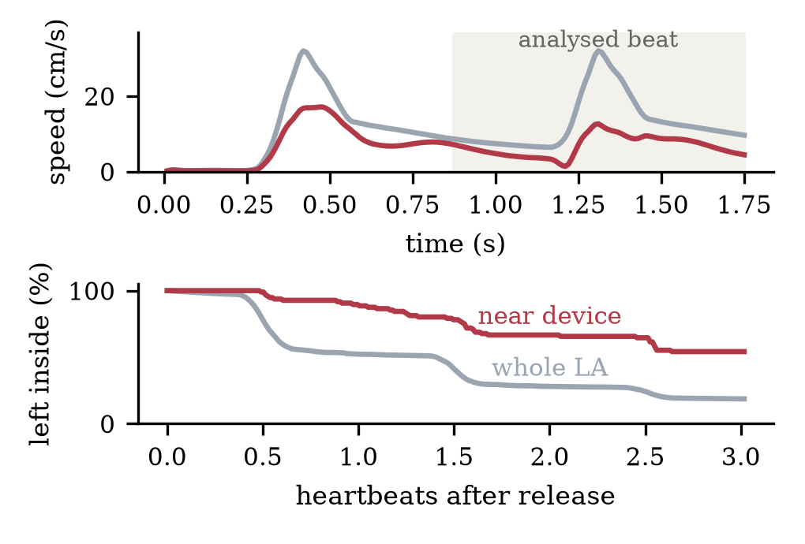

1. Introduction
In atrial fibrillation the upper chambers of the heart quiver instead of contracting, so blood moves slowly in the left atrium (LA). Most of the clots that cause strokes in these patients form in the left atrial appendage (LAA), a small pouch of the LA. When blood thinners cannot be used, the LAA can be closed with an occluder (here, a WATCHMAN-type device). In a few percent of patients a thrombus then grows on the atrial face of the device (DRT), which increases the risk of stroke1,2.
The question of this report is simple: does Case 1 have a DRT? Medical images are the evidence for this. We also simulated the blood flow, because flow explains why a clot may or may not form: clots like slow, stagnant blood3,4.

2. Methods
2.1 Images and segmentation
We used the contrast cardiac CT of Case 1 (voxels of 0.45 × 0.45 × 0.3 mm). In this CT, blood with contrast appears bright (about 490 HU) and the metal of the device very bright (above 700 HU). A clot does not take up contrast, so on CT a DRT appears as a darker layer covering the device, called hypo-attenuated thickening (HAT)5. We segmented the LA, the four pulmonary veins (PVs) and the mitral annulus in 3D Slicer (192.6 mL), and the metal of the device separately (bonus file).
To look for HAT objectively, we drew 516 short lines perpendicular to the device face, 0.5 mm apart, and measured on each line how much dark tissue (below 250 HU) lies between the bright blood and the metal.
2.2 3D model and mesh
The surface of the LA was cleaned and cut in Meshmixer at the four PVs and at the mitral valve (MV, 597 mm²), and rotated so that the MV faces the −Z axis, because the heart motion we impose acts along Z. The MV outline was then extended by a short circular tube (5 mm transition + 10 mm straight). The tube lets the valve slide like a piston, which keeps the mesh valid while it moves (see 2.3). Gmsh then filled the volume with 245,471 tetrahedra (limit 500,000; worst skewness 0.91).
2.3 Blood-flow simulation
Ansys Fluent solved the equations of blood flow (laminar, density 1060 kg/m³, viscosity 3.5 mPa·s) every 0.01 s for two heartbeats of 0.875 s. We used the course boundary profiles: pressure at the PVs (5–8.5 mmHg), outflow velocity at the MV (one filling wave only, as in AF, peak 0.94 m/s), and the up–down motion of the MV plane (8.9 mm). The mesh follows this motion and is rebuilt locally when cells get too distorted. Our first two runs, in which the whole atrial wall was allowed to deform, crashed when the valve moved back up, because cells next to the valve were squeezed until they turned inside out. With the valve tube and a fixed atrial wall the simulation ran without errors. We analysed only the second beat, once the start-up effects had gone.
2.4 What we measured
Speed and washout. Average blood speed in the whole LA and within 10 mm of the device. For washout we released virtual particles everywhere in the LA (one every 3 mm) and counted how many were still inside after each beat. Wall indices. The friction of blood on the wall averaged over the beat (TAWSS, in Pa) is low where blood is slow. The oscillatory shear index (OSI, 0–0.5) is high where the flow keeps changing direction. ECAP = OSI / TAWSS combines both. Values above about 1.4 Pa−1 have been linked to thrombus formation6,7.
3. Results
3.1 The CT shows no clot on the device
On 95 % of the lines the dark layer has zero thickness: bright blood touches the device directly. Only one line in five hundred (0.2 %) shows 3 mm or more, at isolated points on the edge of the frame, where metal blurs the image. A true DRT would appear as a continuous dark cap over the hub. The appendage behind the device is completely dark, so the device closes it fully (no leak) (Figure 2).

3.2 The simulated flow is realistic
The two beats are almost identical (peak MV outflow 500 and 514 mL/s), and each beat moves 82 mL, which is a normal value. Inflow and outflow balance once the small volume change of the atrium (190.7–196.1 mL) is counted. During ventricular filling a strong jet crosses the atrium towards the valve. Between filling waves a slow rotating flow (vortex) occupies the body of the atrium (Figure 3).

3.3 The device sits in a slow region
Blood near the device moves at about half the average speed of the atrium (6.8 vs 13.0 cm/s). It is also renewed much more slowly. After three beats 54 % of the blood that started next to the device is still there, against 19 % for the atrium as a whole (Figures 4 and 5). On the wall around the device the flow oscillates more (OSI 0.38 vs 0.29) and ECAP is higher (0.59 vs 0.44 Pa−1). However, ECAP stays below 1.4 Pa−1 at every point of the wall.


4. Discussion and conclusion
Answer: there is no device-related thrombus in Case 1. The CT decides it: contrast-filled blood touches the device everywhere and no dark layer covers it. The simulation adds context. The occluder sits in the quietest corner of the atrium, where blood is slower, stays longer and rubs the wall in changing directions. These are the conditions that favour clotting1,3,7, but here they are moderate and no point of the wall crosses the ECAP threshold. In plain words: no clot today and a low-to-moderate risk, which supports the usual treatment and the planned follow-up scan.
Limitations. Rigid atrial wall (only the valve moves), generic boundary profiles, blood as a simple fluid, two beats on one mesh, and a single CT snapshot. The ECAP threshold comes from aortic aneurysms6.